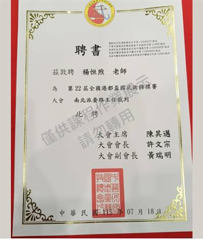
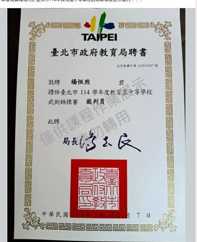
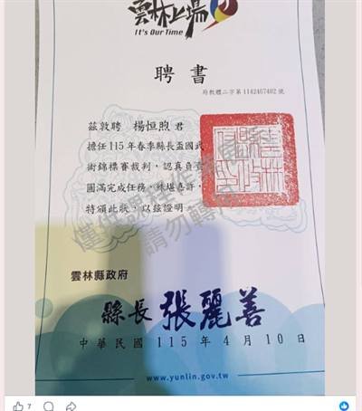

中龍鋼鐵二階建廠
中鋼建廠 V23 借調機械工程師，廠房設備安裝工程監工、監督統包商與下包商、竣工報告書整理。
01 — About
我的職涯起點是機械製圖與自動化。東南技術學院自動化工程系畢業後，進入東南科技大學機電整合研究所，碩士期間投入 DAQ 訊號擷取與 LabVIEW 虛擬量測系統，建立自動化量測的實作經驗——那是我第一次理解「數據要可信，量測必須先可靠」。
2011 年進入產業後，我在亞通能源負責轉動機械與套裝設備的規範審標、請購書與技術文件審查。接著在泰興工程顧問（美商貝泰 Bechtel 台灣合資子公司）擔任專案機械工程師，參與中龍鋼鐵二階建廠、核四龍門工程、沙烏地阿拉伯利雅德捷運機廠設計，以及 Google 彰濱廠的 HVAC 與消防監造。
工程教我的第一課是
品質不是驗出來的，是從源頭設計出來的。
2017 年起轉入益福和生醫科技擔任經理，負責商品銷售與服務督導、宣傳活動規劃與銷售企畫。產業從重工業換到保養品與精油，但核心沒有變——原料到消費者手上的每一個環節都要嚴格把關。
為補上管理與法規知識體系，我進入中山醫學大學國際健康產業經營管理碩士在職專班（乙組職業安全衛生），已於 2026 年 8 月畢業。
工作之外，我練拳超過二十年，入門師承陳添白老師與陳寶玉老師，專攻八極拳，也擔任多項武術協會職務與賽事裁判。武術給我的不只是體能，而是紀律、耐性，以及面對壓力時保持穩定的能力。
02 — Career
2024.09 – 2026.08
中山醫學大學 · 碩士（已畢業）
2017.07 – 至今
益福和生醫科技股份有限公司 · 現職
2012.07 – 2017.06
泰興工程顧問股份有限公司（美商貝泰 Bechtel 台灣合資子公司）· 5 年
2011.10 – 2012.06
亞通能源 · 8 個月
2006.09 – 2008.07
私立東南科技大學
2004.09 – 2006.07
私立東南技術學院
03 — Projects
在泰興工程顧問（美商貝泰 Bechtel 台灣合資子公司）期間參與的國內外專案。
中鋼建廠 V23 借調機械工程師，廠房設備安裝工程監工、監督統包商與下包商、竣工報告書整理。
協助廠商現場測繪及文書事項。
空調分析與圖面繪製。
HVAC 與消防監造。
轉動機械與套裝設備規範審標、請購書與審標書、廠商技術文件審查。
系統分解圖、BOM 表與設計動作說明；渦輪交錯齒設計產生渦漩。
04 — Licenses



為保護個人資料，正本已縮圖並加註浮水印，公文文號不公開。
05 — Martial Arts
陳添白老師（高中拜入門下，習中央國術館八極拳系）、陳寶玉老師（深圳，已列名於陳寶玉老師傳承譜）。
八極拳為主：大八極、小八極、八極連環、八極鞭桿、五祖拳、晉卿八極拳、連步拳、少林一路、六合虎風刀、洪拳、楊氏太極拳、陳氏太極拳。
26
競賽成績記錄
2016–2023
21
裁判聘任項數
2018–2026
多次於台灣世界盃、中正盃國際、孫逸仙盃全球、廈門國際、貴州武林菁英賽等賽事獲獎，多為八極拳第一名； 2023 年受邀至北京市武術協會交流。
06 — Contact
無論是工程技術、品質安全管理，或健康產業的經營合作，都歡迎交流。
為避免信箱被自動蒐集，本站不以明文顯示地址。